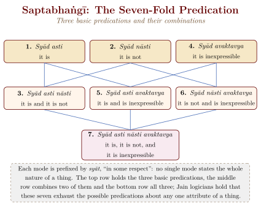

Chapter 9: Jain Philosophy: Anekāntavāda, Syādvāda, and Nayavāda¶
9.1 The Distinctive Tools of Jain Philosophy¶
Jain philosophy is one of the most original of the classical Indian systems (Matilal 1981; Dundas 2002). While the Jain tradition shares with the Buddhist and Brahmanical schools a concern with liberation (mokṣa), it developed three distinctive philosophical tools — anekāntavāda (the doctrine of non-one-sidedness), syādvāda (the doctrine of conditional predication) and nayavāda (the theory of standpoints) — with which it claimed to do justice to a reality that has many aspects at once.
These three doctrines are not separate theories but interconnected aspects of a single philosophical vision. Anekāntavāda is the ontological thesis: reality is many-sided. Nayavāda is the epistemological method: reality can be apprehended from multiple standpoints. Syādvāda is the logical expression: any proposition about reality must be qualified by the conditional particle syāt (“in some respect,” “from a certain standpoint”) (Long 2009; Matilal 1981).
9.2 Anekāntavāda: The Doctrine of Non-Absolutism¶
Anekāntavāda (literally “the doctrine of non-one-sidedness” or “many-sidedness”) is the Jain ontological principle that reality is complex, multi-dimensional, and not reducible to any single characterisation. Every entity (vastu) possesses infinite attributes (dharma), and any single description captures only one aspect of the whole.
9.2.1 The Parable of the Blind Men and the Elephant¶
A popular illustration of Anekāntavāda is the parable of the blind men and the elephant. Its earliest known version is Buddhist (Udāna 6.4), where it illustrates the quarrels of sectarian teachers; Jain authors later adopted it to illustrate the partial truth of one-sided views.
A group of blind men each touch a different part of an elephant: one touches the trunk and declares the elephant to be like a snake; another touches the leg and declares it to be like a pillar; another touches the tail and declares it to be like a rope; and so on. Each is partially right, but none possesses the complete truth. Only by integrating all perspectives can the full reality of the elephant be apprehended.
9.2.2 Philosophical Implications¶
The classical formulation is Siddhasena Divākara’s: every view is true in its own sphere and false when it denies the others. Rival philosophies are therefore not simply wrong but one-sided (ekānta); each grasps a real aspect of things and errs only in taking that aspect for the whole. The Buddhist who says that everything is momentary is right about modes, and the Vedāntin who says that reality is permanent is right about substance; the Jain view, which affirms both, claims to include what is true in each. Modern Jain writers have drawn from this a lesson of intellectual humility and tolerance, but in its classical setting the doctrine was also a strategy of argument, which allowed Jain logicians to absorb and subordinate their opponents’ positions (Chapter 11, Section 11.6).
9.3 Syādvāda: The Doctrine of Conditional Predication¶
Syādvāda (the doctrine of “perhaps” or “in some respect”) is the logical method by which Anekāntavāda is expressed in propositions. According to Syādvāda, any proposition about reality can be stated in seven modes (saptabhaṅgī), each qualified by the particle syāt (“in some respect,” “from a certain standpoint”).
9.3.1 The Seven-Fold Predication (Saptabhaṅgī)¶
Taking as an example the proposition “the pot exists” (ghaṭa asti), the seven modes are set out in Table 9.1 and Figure 9.1.
| No. | Mode (Sanskrit) | Meaning |
|---|---|---|
| 1 | Syād asti | In some respect, it exists (e.g., as a clay object, in a certain place and time) |
| 2 | Syād nāsti | In some respect, it does not exist (e.g., it is not a cloth, not in another place) |
| 3 | Syād asti nāsti | In some respect, it both exists and does not exist (considering different aspects successively) |
| 4 | Syād avaktavya | In some respect, it is inexpressible (both properties simultaneously cannot be verbally expressed at once) |
| 5 | Syād asti avaktavya | In some respect, it exists and is inexpressible |
| 6 | Syād nāsti avaktavya | In some respect, it does not exist and is inexpressible |
| 7 | Syād asti nāsti avaktavya | In some respect, it exists, does not exist, and is inexpressible |

9.3.2 Logical Sophistication¶
The Saptabhaṅgī is not a violation of the law of non-contradiction, as critics have sometimes alleged. Each of the seven modes applies from a different standpoint (naya) and in a different respect. The Jain logicians were careful to specify that “exists” and “does not exist” are predicated of the same entity but with respect to different attributes, times, places, or natures. In the standard example, a clay pot “exists” with respect to its own substance (clay), place, time and state, and “does not exist” with respect to another substance (such as metal), another place, time or state; there is no contradiction because the respects differ. Modern scholars have discussed whether the scheme is best understood as a many-valued logic, a logic of context-relative assertion or a theory of perspectives (Matilal 1981; Ganeri 2001).
9.4 Nayavāda: The Theory of Standpoints¶
Nayavāda (the theory of nayas, or “standpoints”) is the epistemological complement to Anekāntavāda and Syādvāda. A naya is a particular standpoint or perspective from which reality is viewed. Each naya captures a partial truth; error arises when a partial perspective is mistaken for the whole truth (nayābhāsa).
9.4.1 The Seven Nayas¶
The standard list, given in the Tattvārthasūtra and its commentaries, has seven nayas in two groups (Table 9.2). The first three look at things as substances (dravyārthika): the “common-sense” standpoint (naigama) that takes the general and the particular together, as when one says “I am cooking” while still lighting the fire; the “collective” standpoint (saṅgraha) that attends only to what things have in common, such as being; and the “practical” standpoint (vyavahāra) that divides the collective into the kinds that ordinary usage needs. The last four look at modes (paryāyārthika): the “straight-thread” standpoint (ṛjusūtra) that considers only the present moment, which the Jains regarded as the Buddhist error when taken by itself; and three linguistic standpoints, which attend to the grammatical form of a word (śabda), to its etymology, so that synonyms are not treated as identical (samabhirūḍha), and to the moment at which a word’s meaning is actually realised (evambhūta), so that Indra is “Indra” only while exercising lordship. The list runs from the widest to the narrowest view, and each is valid within its limits.
| Group | No. | Naya | Description |
|---|---|---|---|
| Dravyārthika (Substance- oriented) |
1 | Naigama | The common-sense standpoint that grasps both universal and particular without distinguishing them |
| 2 | Saṅgraha | The synthetic standpoint that focuses on the universal, generic aspect | |
| 3 | Vyavahāra | The practical standpoint that focuses on the particular, empirical aspect | |
| Paryāyārthika (Mode- oriented) |
4 | Ṛjusūtra | The straight-thread standpoint that focuses on the present moment |
| 5 | Śabda | The verbal or linguistic standpoint; the analysis of words and their referents | |
| 6 | Samabhirūḍha | The etymological standpoint that derives meaning from word-roots | |
| 7 | Evambhūta | The “such-like” standpoint that restricts the meaning to what is presently actualised |
9.5 The Six Dravyas (Substances)¶
Jain metaphysics recognises six eternal, uncreated substances (dravya) (Schubring 1962; Long 2009). Souls (jīva) are conscious, infinite in number and each eternally individual. Matter (pudgala) has colour, taste, smell and touch, and makes up bodies, speech, mind and karma itself. Space (ākāśa) gives room to everything else and extends beyond the inhabited universe (loka) into an infinite empty space. Two further substances are peculiar to Jainism: dharma, the medium that makes motion possible, and adharma, the medium of rest; they fill the loka but not the space beyond it, which is why liberated souls, rising, stop at its summit. Time (kāla), counted as a substance by most authors, accounts for change and succession. The terms dharma and adharma here have nothing to do with their moral sense elsewhere in Indian thought.
Each substance (dravya) possesses qualities (guṇa) and modes (paryāya). The substance itself is permanent, while its modes change from moment to moment. This ontological framework allows the Jain philosopher to affirm both permanence and change, both identity and difference — an expression of Anekāntavāda at the metaphysical level.
9.5.1 The Jīva–Ajīva Distinction¶
The most fundamental ontological distinction in Jainism is between jīva (soul, consciousness) and ajīva (non-soul, unconscious matter). The five non-soul substances (pudgala, ākāśa, dharma, adharma, and kāla) are all ajīva.
The soul so understood is eternal and individual; its defining quality is consciousness (cetanā); it is an agent (kartā) and an experiencer (bhoktā) of the fruits of its acts; and, unusually among Indian theories of the self, it is of the same size as the body it occupies, expanding and contracting like the light of a lamp in a large or a small room. Its infinite knowledge, perception, bliss and energy are its own nature, obscured but not destroyed by karma, so that liberation is the recovery of what the soul always was.
This position stands in sharp contrast to the Buddhist doctrine of anātman (no-self), which denies the existence of a permanent, unchanging soul.
9.6 Jain Epistemology: The Pramāṇas¶
The Jain tradition recognises five types of knowledge (jñāna), which from Umāsvāti onwards are organised under two pramāṇas, direct and indirect (Umāsvāti 1994). Sensory knowledge (mati), gained through the senses and the mind, and verbal or scriptural knowledge (śruta), gained through words and texts, are indirect (parokṣa), because they depend on instruments outside the soul. Clairvoyance (avadhi), limited in space and time, knowledge of the minds of others (manaḥparyāya), and omniscience (kevala), the unlimited knowledge of all substances and all their modes in all times, are direct (pratyakṣa), known by the soul without the senses. The classification inverts ordinary usage, in which sense-perception is the model of direct knowledge; later logicians, beginning with Akalaṅka, therefore also called ordinary perception “empirically direct” (sāṃvyavahārika pratyakṣa) to accommodate the usage of other schools. Omniscience, the knowledge of every kevalin, of whom the Tīrthaṅkaras are the teaching exemplars, is the goal of the path.
9.7 The Tattvas: Categories of Reality¶
Jain philosophy identifies seven (or, in expanded formulations, nine) fundamental categories of reality (tattvas) that provide the conceptual framework for understanding the soul’s bondage and liberation (Table 9.3).
| No. | Tattva | English | Description |
|---|---|---|---|
| 1 | Jīva | Soul | The conscious, eternal, individual entity |
| 2 | Ajīva | Non-soul | The five non-conscious substances: matter, space, dharma, adharma, time |
| 3 | Āsrava | Influx | The inflow of karmic matter into the soul through activities of body, speech, and mind |
| 4 | Bandha | Bondage | The binding of karmic matter to the soul through passions |
| 5 | Saṃvara | Stoppage | The prevention of new karmic influx through ethical discipline |
| 6 | Nirjarā | Shedding | The destruction of accumulated karma through austerity and meditation |
| 7 | Mokṣa | Liberation | Complete freedom from all karma; the soul’s attainment of infinite knowledge, perception, bliss, and energy |
| 8* | Puṇya | Merit | Influx of auspicious karma through wholesome actions |
| 9* | Pāpa | Demerit | Influx of inauspicious karma through unwholesome actions |
* Added in the nine-fold scheme (navatattva), common in Śvetāmbara teaching; the Tattvārthasūtra (I.4) lists seven.
Jīvājīvāsrava-bandha-saṃvara-
nirjarā-mokṣās tattvam.
Soul, non-soul, influx, bondage, stoppage, shedding, and liberation — these are the categories of reality.
— Tattvārthasūtra I.4, Umāsvāti
The comprehension of these seven tattvas constitutes samyak-jñāna (right knowledge), which, together with samyak-darśana (right faith) and samyak-cāritra (right conduct), forms the path to liberation.
9.8 Major Jain Philosophers and Their Works¶
The principal Jain philosophers, listed in Table 9.4, wrote in constant exchange with Buddhist and Brahmanical opponents, and several of their works survive partly because they quote those opponents at length.
| Philosopher | Period | Key Works and Contributions |
|---|---|---|
| Umāsvāti | between 2nd and 5th c. CE (disputed) | Tattvārthasūtra — the most authoritative compendium of Jain philosophy, accepted by both sects |
| Kundakunda | disputed: traditionally 1st c.; estimates range from 2nd to 8th c. CE | Samayasāra, Pravacanasāra, Niyamasāra, Pañcāstikāya — foundational Digambara philosophy; distinction between niścaya-naya and vyavahāra-naya |
| Siddhasena Divākara | c. 5th c. CE | Sanmatitarka; the Nyāyāvatāra attributed to him may be by a later Siddhasena — pioneering work in Jain logic |
| Samantabhadra | c. 6th c. CE (disputed) | Āptamīmāṃsā — systematic defence of the Jain theory of knowledge |
| Akalaṅka | c. 8th cent. CE | Tattvārtharājavārttika, Laghīyastraya, Aṣṭaśatī — refutation of Buddhist logic; development of Jain epistemology |
| Haribhadra Sūri | c. 8th cent. CE | Ṣaḍdarśanasamuccaya, Anekāntajayapatākā — comparative survey of the philosophical systems; critique of Buddhist positions |
| Prabhācandra | c. 11th cent. CE | Prameyakamalamārtaṇḍa — comprehensive epistemological treatise |
| Hemacandra | 1088/89–1172 CE | Pramāṇamīmāṃsā, grammars of Sanskrit and Prakrit, histories; honoured as Kalikālasarvajña (“the omniscient of the Kali age”) |
| Yaśovijaya | 17th cent. CE | Jainatarkabhāṣā — integration of Navya-Nyāya logic with Jain philosophy |
9.8.1 Kundakunda and the Two-Standpoint Theory¶
Kundakunda, whose date is disputed (traditional accounts place him in the first century CE, while some modern scholars place him as late as the eighth), is the most revered author of the Digambara tradition (Dundas 2002). His distinction between the niścaya-naya (ultimate standpoint) and the vyavahāra-naya (conventional standpoint) shaped all later Digambara thought.
From the ultimate standpoint, the soul is pure consciousness, untouched by karma, eternally free. From the conventional standpoint, the soul is bound by karma, caught in the cycle of rebirth, and in need of liberation. Both standpoints are valid — a characteristic expression of Jain anekāntavāda applied to the self.
9.8.2 Haribhadra Sūri and Comparative Philosophy¶
Haribhadra Sūri (c. 8th century CE) is notable as an early practitioner of comparative philosophy. His Ṣaḍdarśanasamuccaya (“Compendium of the Six Philosophies”) gives an even-handed summary of six systems — Buddhist, Nyāya, Sāṃkhya, Jaina, Vaiśeṣika and Mīmāṃsā — with a brief account of the materialist Lokāyata; it does not, as is sometimes said, treat Yoga and Vedānta as separate systems. His approach embodies the Jain principle of anekāntavāda — the recognition that different philosophical systems capture different aspects of a complex reality.
9.9 Jain Logic and the Challenge to Buddhist Epistemology¶
The Jain logicians engaged in extensive and sophisticated debates with their Buddhist counterparts, particularly regarding the nature of perception, the validity of omniscience, and the theory of universals.
Scholarly Note: Akalaṅka and Dharmakīrti
The Jain philosopher Akalaṅka (8th century CE) mounted a systematic critique of Dharmakīrti’s epistemology. He accepted that there are two pramāṇas but redefined them: the direct (pratyakṣa) includes both ordinary sense-perception and the supersensory knowledge of the Jain tradition, while the indirect (parokṣa) includes memory, recognition (pratyabhijñā), inductive reasoning (tarka), inference and scriptural testimony — several of which Dharmakīrti had refused to count as valid cognition. He also attacked the Buddhist doctrines of momentariness and of meaning by exclusion (apoha), arguing that they made stable knowledge and moral responsibility impossible (Dundas 2002; Ganeri 2001). Table 9.5 summarises the key points of disagreement.
| Issue | Buddhist Position (Dharmakīrti) | Jain Position (Akalaṅka) |
|---|---|---|
| Nature of reality | All phenomena are momentary (kṣaṇika) | Substances are permanent; modes change |
| Universals | Unreal; apoha (exclusion) theory | Real; every entity has both general and particular aspects (sāmānya-viśeṣātmaka) |
| Self/Soul | No-self (anātman); stream of moments | Eternal, individual soul (jīva) |
| Omniscience | Dharmakīrti stresses the Buddha’s authority on what matters for liberation; later Buddhists defend full omniscience | Affirmed as the highest form of knowledge (kevala) |
| Number of pramāṇas | Two: perception and inference | Two: direct and indirect, the latter including memory, recognition, tarka, inference and testimony |
| Nature of perception | Non-conceptual; unique particular | Both conceptual and non-conceptual forms |
9.10 Comparison with Buddhist and Brahmanical Philosophies¶
The Jain position is easiest to see against its neighbours.
- Versus Buddhist Anātman
- While Buddhism denies the existence of a permanent self (anātman), Jainism affirms the reality of an eternal, individual soul (jīva). For the Jain, the soul is the knower, the agent, and the experiencer; the Buddhist reduces these to a stream of momentary mental events.
- Versus Advaita Vedānta
- While Advaita Vedānta posits a single, universal Self (Brahman/Ātman), Jainism insists on the plurality and individuality of souls. Each soul is distinct even in liberation.
- Versus Nyāya-Vaiśeṣika
- The Jain system shares with Nyāya-Vaiśeṣika a realist metaphysics, but differs in its theory of substance (six dravyas versus the Vaiśeṣika’s seven padārthas) and in its distinctive logical method (Syādvāda versus the Nyāya syllogism).
Seen together, the doctrines of many-sidedness, conditional predication and standpoints give the Jain system its characteristic shape: a realism that affirms both permanence and change, and a logic designed to state that double affirmation without contradiction. Modern Jain writers have drawn on this framework as a resource for dialogue between traditions; in its classical setting it was also a weapon of debate, used to show that rival systems each grasped only part of the truth. The place of Jain philosophy among the Indian philosophical systems is discussed further in Volume 3 of this series (Darśana Darpaṇa).